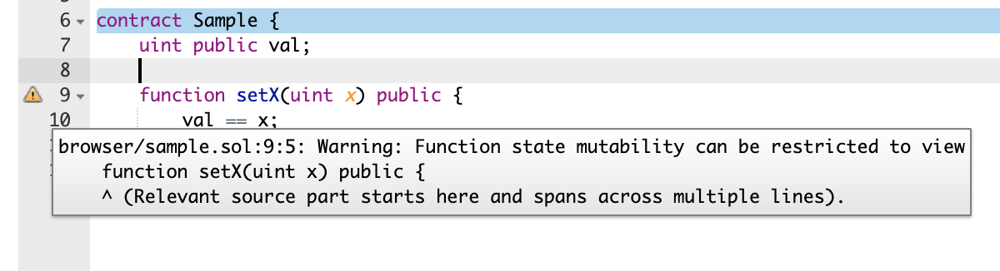

### Smart Contract Security Audit #### Advanced Smart Contract <div class="author">Yuet Loo Wong</div>
### Topics - Security Audit - Audit Report - Analysis Tools - References
### Security Audit An analysis of smart contracts in order to find security vulnerabilities, typically involves: 1. Analyze specifications 1. Run tests 1. Run automated analysis tools 1. Perform manual code audit 1. Create audit report
### Audit Report - Typically includes: - Disclaimer - Not guarantee bug free - What was audited, version - Findings - Severity: Critical, High, Low - Recommendations
### Issue Severity - Critical: can cost unlimited amount of funds - High: can cost limited amount of funds - Low: minor problems or better solutions
### Sample Audit Reports - <a href="https://github.com/EthereumCommonwealth/Auditing/issues/340#issuecomment-524348753" target="blank">Dai Security Audit Report</a> - <a href="https://github.com/OpenZeppelin/openzeppelin-contracts/tree/master/audit" target="blank">OpenZeppelin Security Audit Report</a>
### Security Tools - Static Analyzer in Remix - MythX in Remix or truffle - <a href="https://consensys.github.io/smart-contract-best-practices/security_tools/" target="_blank">Security Tools</a>
### Manual Audit Automatic analysis tools is not reliable, give false positive and miss finding issues; manual auditing is still required
### Audit Checklists A list of common issues is a useful tool for security audit
### Useful Checklists and References - <a href="https://consensys.github.io/smart-contract-best-practices/recommendations/" target="_blank">Consensys Security Best Practices</a> - <a href="https://swcregistry.io" target="_blank">Smart Contract Weakness Classification</a> - <a href="https://blog.sigmaprime.io/solidity-security.html" target="_blank">Solidity Security: known attack vectors and fixes</a> - <a href="https://github.com/ethereum/wiki/wiki/Safety" target="_blank">Ethereum Safety Wiki</a> - <a href="https://medium.com/hashex-blog/how-to-perform-your-first-smart-contract-audit-3d6883f44924" target="_blank">Smart contract security audit</a> - <a href="https://blockgeeks.com/guides/audit-smart-contract/#_The_Steps_for_a_Full_Smart_Contract_Audit" target="_blank">Blockgeeks Security Audit Checklists</a> - <a href="https://ethernaut.openzeppelin.com/level/0xdf51a9e8ce57e7787e4a27dd19880fd7106b9a5c" target="_blank">Ethernaut Contract Hacking Game</a>
### Check for Warnings - Any compiler or analysis tool warnings? - Warnings could be - false positive - bug - == should be = </img>
### Testing - Any test failures? - Any function missing tests?
### Code Currency - Use latest solidity compiler? - may have patches for security risks - solidity v0.6.0 changes - array.length-- is not allowed - <a href="https://swcregistry.io/docs/SWC-119#tokensalesol" target="_blank">state variable shadowing</a> not allowed
### External Calls - Is there any state changes after external calls? - Is <a href="https://solidity.readthedocs.io/en/v0.6.4/security-considerations.html#use-the-checks-effects-interactions-pattern" target="_blank">Checks-Effects-Interactions</a> pattern used to avoid re-entrancy issue? - Are errors in external calls <a href="https://www.dasp.co/#item-4" target="_blank">handled properly</a>?
### Denial of Service attacks - Do external calls <a href="https://github.com/ethereum/wiki/wiki/Safety#favor-pull-over-push-for-external-calls" target="_blank">favor push over pull</a>? - push: 2 accounts, A pushes to B - pull: 1 account, A pulls from contract - Is <a href="https://medium.com/@jgm.orinoco/why-use-the-withdrawal-pattern-d5255921ca2a" target="_blank">withdrawal</a> pattern being used?
### Permission - Functions should have proper permission checking to ensure only the authorized can run the functions - <a href="https://swcregistry.io/docs/SWC-106" target="_blank">Unprotected selfdestruct</a> ``` function kill() public { selfdestruct(msg.sender); } ```
### Failure Preparation - Can the contract <a href="https://github.com/ethereum/wiki/wiki/Safety#circuit-breakers-pause-contract-functionality" target="_blank">pause operation</a>? - Can malicious actions be <a href="https://github.com/ethereum/wiki/wiki/Safety#speed-bumps-delay-contract-actions" target="_blank">delayed</a>? - How are fund at risk managed? - Can broken contract be <a href="https://github.com/ethereum/wiki/wiki/Safety#upgrading-broken-contracts" target="_blank">upgraded</a>?
### Front Running - Is there <a href="https://consensys.github.io/smart-contract-best-practices/known_attacks/#front-running" target="_blank">transaction ordering dependence</a>? - Insertion attack: ERC20 Approve/TransferFrom - changing approval from 5 to 3 may result in 8 (5 + 3) tokens transfered - work around by approving 5, then 0, then 3
### Overflow - Is there integer wraparound issue? - When arithmetic reaches bound, it wraps - uint8(255) + uint8(1) == 0 - uint8(0) - uint8(1) == 255
### Division - Is there division by zero? - EVM will revert - Is there <a href="https://github.com/ethereum/wiki/wiki/Safety#beware-rounding-with-integer-division" target="_blank">rounding</a> issue?
### Delegate Calls - Is the context used properly? - Will the call cause <a href="https://ethernaut.openzeppelin.com/level/0x68756ad5e1039e4f3b895cfaa16a3a79a5a73c59" target="_blank">change of control</a>?
### Unexpected Contract Balance - Any strict assumption of contract balance? - Ether can be <a href="https://consensys.github.io/smart-contract-best-practices/known_attacks/#forcibly-sending-ether-to-a-contract" target="_blank">forced sent to a contract</a> - Contract can be pre-funded with ether - Attack on this <a href="https://gist.github.com/vasa-develop/415a17c709d804a4d351485cd1b7c981#file-ethergame-sol" target="_blank">example</a> can make claimReward() to always fail
### Bounty Program - Used to get community to audit code - <a href="https://consensys.github.io/smart-contract-best-practices/bug_bounty_list" target="_blank">Consensys Bug Bounty List</a> - <a href="https://bounty.ethereum.org" target="_blank">Ethereum Bounty Program</a>